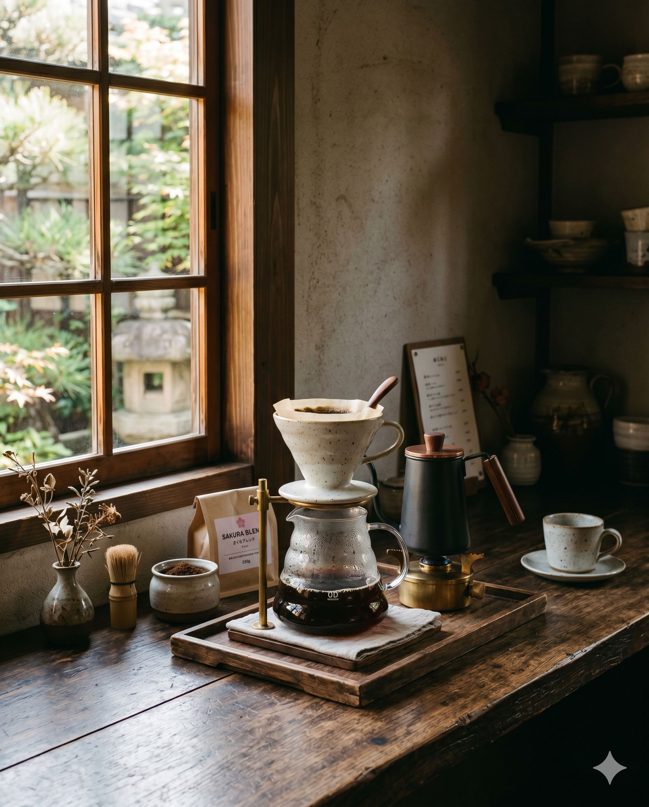
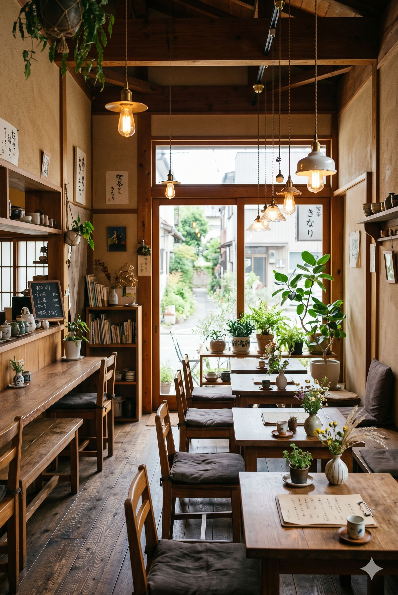

2019 年的秋天，一位在東京修業三年的咖啡職人回到了高雄。他帶回的不只是沖煮技術，還有一個簡單的信念——在忙碌的城市裡，每個人都值得擁有一個安靜喝杯好咖啡的角落。
他在前金區的巷弄裡找到了一間老屋，門前有一棵樹齡三十年的老榕樹。陽光穿過樹葉灑落的樣子，讓他想起了店名——「煦」，是清晨穿透樹梢的第一道暖陽；「渡」，是人生旅途中短暫的停靠。
關於店主 About the Owner
吉田悠介（Yusuke Yoshida），出生於高雄，大學畢業後赴日，先在東京神保町的老舖珈琲店「さぼうる」學習基礎，後進入南青山的精品咖啡店「Fuglen Tokyo」擔任烘豆師，專攻北歐淺焙風格。
三年的修業期間，悠介走訪了京都、大阪、福岡超過兩百間珈琲店，深受日本「一杯入魂」精神影響。他相信一杯好咖啡不只是味覺的享受，更是一段與自己獨處的時光。
「在東京的時候，我常常在想：高雄其實很適合開一間讓人放慢腳步的咖啡店。這裡有陽光、有老房子、有願意花時間品味的人。我想把在日本學到的東西帶回來，用自己的方式詮釋。」

煦渡的堅持 Our Philosophy
開店至今五年，煦渡珈琲始終堅持幾件事：
- 自家烘焙——每週小批量烘焙，確保豆子在最佳賞味期內供應。我們使用 Probat 5kg 半熱風烘豆機，依據每支豆子的特性調整烘焙曲線。
- 單品為主——我們相信好的咖啡豆本身就有豐富的風味，不需要過多的調味。手沖單品永遠是菜單上最重要的角色。
- 器具講究——Hario V60、Kalita Wave、ORIGAMI 濾杯，每一款都有不同的風味表現。點單品時，歡迎跟吧台討論適合的沖煮方式。
- 空間即體驗——木質、暖光、綠植、手作選物。我們花了很多心思在空間設計上，因為環境會影響一杯咖啡的感受。
空間設計 Space Design
煦渡的空間由高雄在地設計工作室「木日設計」操刀。以「日本民藝」風格為基調，大量使用台灣檜木回收料與日式和紙燈具，地板是從屏東老屋拆下的磨石子地磚重新鋪設。

吧台區採用整塊台灣黑檀木製成，長 3.2 公尺，是店裡最醒目的存在。面對吧台的座位是我們最推薦的位置——可以近距離看職人手沖的過程，聽磨豆機運轉的聲音，聞到剛研磨的咖啡香氣。
二樓是「靜音區」，僅設 8 個座位，不提供插座與 Wi-Fi，只有書架、自然光和咖啡。這是我們送給想真正放空的客人的禮物。
名字的由來 Origin of the Name
「煦渡」兩個字，其實是悠介在京都鴨川旁散步時想到的。那天傍晚，夕陽把河面染成金色，他突然覺得每個人的人生都像一條河，而咖啡店就是河上的一個小渡口——你不一定要停留很久，但這裡的溫暖會陪你走一段。
日文裡沒有完全對應的詞，所以他取了英文名「Floatté」——Float（漂浮、放鬆）和 Latte 的混合，帶著一點幽默和自在。
煦渡珈琲 Floatté Coffee
Since 2019 · Kaohsiung